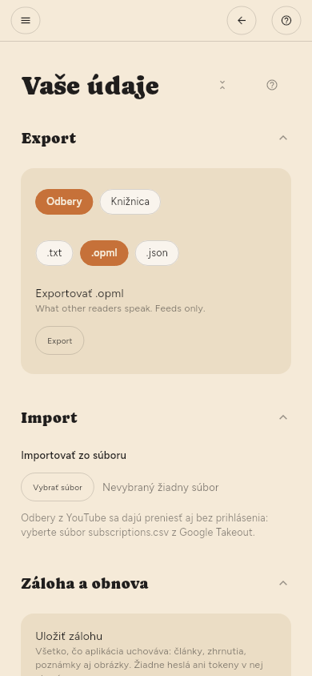

Kde sú uložené údaje
Vaša knižnica je jeden súbor SQLite v dátovom priečinku aplikácie. Záloha tohto súboru zálohuje všetko: články, zhrnutia, zvýraznenia a to, čo ste prečítali. Nastavenia › Pokročilé › Vaše údaje › Záloha a obnova vytvorí rovnakú kópiu ako jeden súbor bez toho, aby ste priečinok hľadali.
